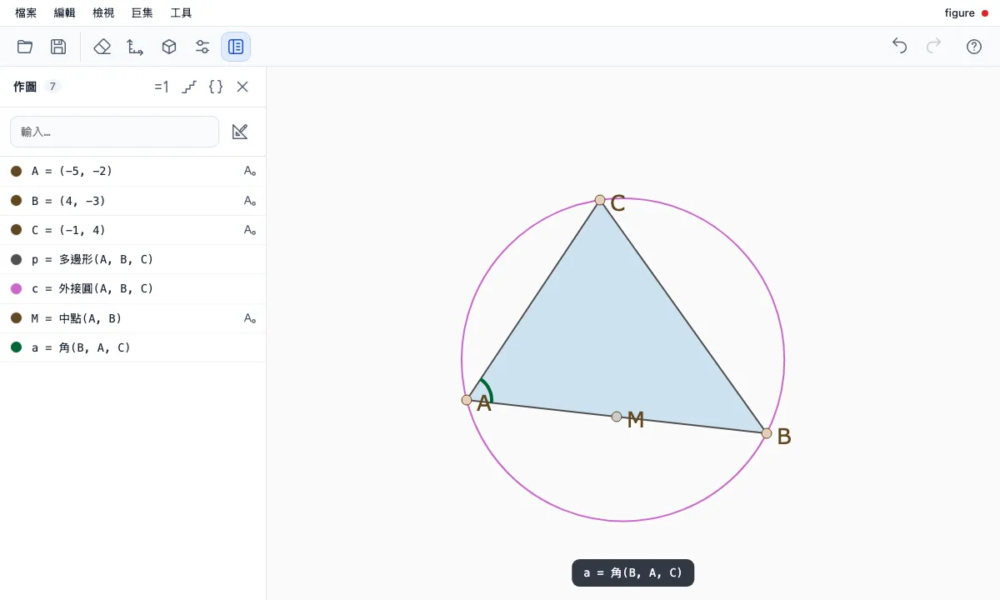
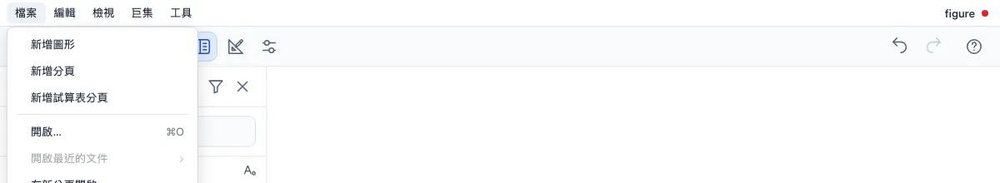

介面

選單列

| 選單 | 命令 |
|---|---|
| 檔案 | 新增圖形, 開啟… (Ctrl O), 儲存 (Ctrl S), 另存新檔… (Ctrl Shift S), 嵌入網頁… |
| 編輯 | 復原, 重做, 刪除, 橡皮擦 |
| 檢視 | 座標系, 3D 檢視, 作圖歷程, 工具面板, 屬性, 全螢幕（按 Esc 離開）：勾號表示目前顯示的內容 |
| 工具 | 使用手冊, DocTools, 授權與 GitHub, 關於… |
右側是圖形的檔名，僅限 Chrome 和 Edge（儲存）。DocGeo 嵌入其他頁面（如 DocTools）時不顯示選單列。
操作列
| 按鈕 | 作用 | |
|---|---|---|
| 開啟 |
.dgo、.dgp、.ggb
|
|
| 儲存 | 儲存為 .dgo |
|
| 橡皮擦 | 隱藏或顯示物件（橡皮擦） | |
| 座標系 | 座標軸和格線；3D 中為三面角和地面 | |
| 3D 檢視 | 進入空間或返回平面（3D） | |
| 工具面板 | 右側面板，列出全部工具（工具面板） | |
| 屬性 | 右側面板（屬性） | |
| 作圖 | 左側面板 | |
| 復原、重做 | Ctrl Z，Ctrl Shift Z 或 Ctrl Y | |
| 使用手冊 | 在新分頁中以 DocGeo 的語言開啟手冊 |
中間的情境區顯示所選物件的名稱和操作。
「作圖」面板
-
每個物件一列，按作圖順序排列：
M = 中點(A, B)。每一列都可以修改（重新定義）。 - 列首的圓點用於隱藏或顯示物件；列尾的顯示其名稱。點物件的圓點採用該點的形狀和顏色。
- 在屬性中開啟它的定義。
- 將指標停留在任意一行上，可刪除該物件及依賴它的物件。此操作可以復原。
- 標題列：物件數量、數值、逐步構造、 篩選。
- 輸入列「輸入…」；寬度小於 500 px 時，工具面板的按鈕會移到其右側。
- 游標停留在某一列上時對應物件會醒目顯示，反之亦然。
提示
圖形底部的泡泡顯示目前需要什麼（「選取一個點」）、工具將要寫出的列，以及紅色的錯誤訊息。其上的✕用於離開目前的工具。
瀏覽
| 操作 | 手勢 |
|---|---|
| 平移檢視 | 拖曳空白處；在任意處按住右鍵 |
| 縮放 |
滾輪或觸控板，以游標為中心 雙指縮放：以兩指中點為中心縮放 |
| 旋轉 3D 圖形 | 右鍵，或單指在空白處拖曳 |
| 透視、地面（3D） | P、S |
當圖形含有動畫時，左下角會出現一個圓形按鈕，用於暫停或繼續動畫。
復原
每一次修改都是同一個堆疊中的一步：作圖、刪除、移動、樣式、座標系設定、進入 3D。檢視的縮放、平移和旋轉不算在內。
面板
- 拖曳面板的內側邊緣可調整寬度；按兩下恢復預設寬度。
- 寬度小於 900 px 時，一次只開啟一個面板；寬度為 600 px 或更小時，「作圖」面板啟動時關閉，屬性面板覆蓋在圖形上，選取工具會關閉面板。